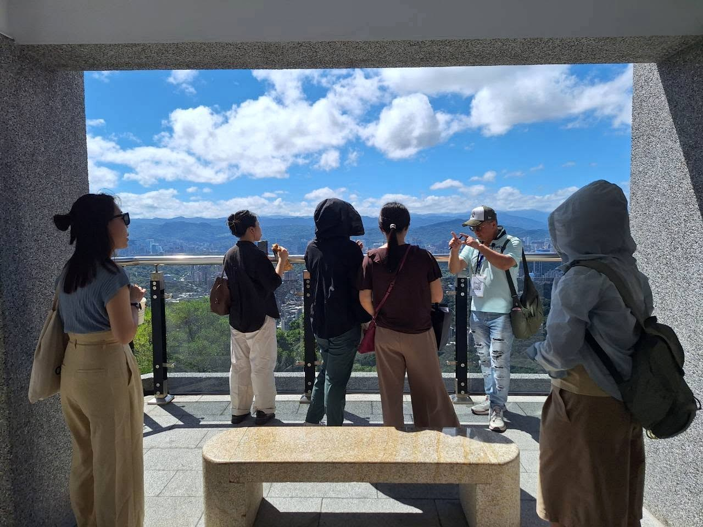

不只介紹景點，更串起故事
從河流、街道、建築、信仰與產業的線索出發，理解一個地方為何成為今天的模樣。
台灣的許多城市沿著河流發展。從昔日渡口、繁華街市，到廟埕與市場，水流帶來往來的人群，也孕育地方的生活與記憶。即使城市不斷變遷，那些留在街角的故事，依然閃耀著自己的光。
古蹟廟宇承載信仰的厚度，百年老店保存時間的味道，轉角小吃延續人情的香氣，地標建築映照現代的風華。這些看似平凡的風景，交織成台灣城市清潤而深厚的韻味，值得我們停下腳步，細細閱讀。
美遊記以文化為軸心、以永續為信念，設計一場場有溫度的城市行旅。不是急著走過更多景點，而是透過故事與現場觀察，重新理解一座城市，重新感受人與土地的連結。
從河流、街道、建築、信仰與產業的線索出發，理解一個地方為何成為今天的模樣。
由文化領讀人引導觀察與發現，讓平常忽略的細節，成為理解城市的入口。
透過步行、故事與對話，重新認識身邊的土地，讓文化理解成為尊重地方的開始。
不必事先熟悉地方歷史，也不需要準備專業知識。跟著美遊記放慢腳步，從一個熟悉或陌生的街角開始，逐漸看見城市不同的層次。
認識路線的時代背景與文化脈絡，帶著好奇心走進街區。
觀察建築細節、地名、老店與信仰空間，讓原本抽象的歷史變得具體。
不只知道「這裡有什麼」，也開始理解「為什麼值得珍惜」。
一般城市故事行旅約兩小時；實際集合地點、步行安排與活動時間，以各場次公告為準。
在美遊記公布的城市走讀參與者回饋中，有人重新認識了自己生活的城市，也有人發現，原本難以理解的歷史與宗教，經過現場故事的引導，竟變得親近而有趣。
參與者回饋摘錄自美遊記於 2026 年 8 月 3 日刊載的城市故事行旅報導；引文為原文摘錄，不代表所有參與者的意見。

街道、建築、地景與地方故事，在行走之間彼此連起來。
台北市｜13 條
新北市｜5 條
基隆市｜2 條
不是每一條路線都會同時開放公開報名；目前場次請查看「近期活動」。團體可洽詢既有路線或專案規劃。
想先了解城市走讀如何成為地方文化與永續生活的連結？可延伸閱讀美遊記的文化行旅理念。